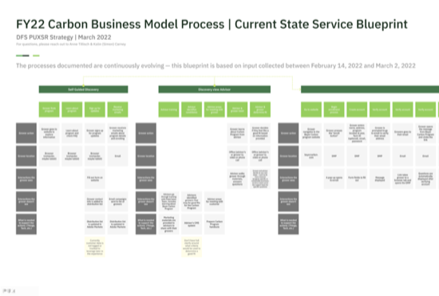
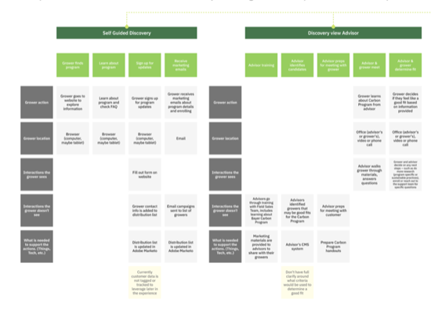
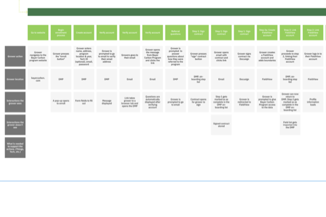
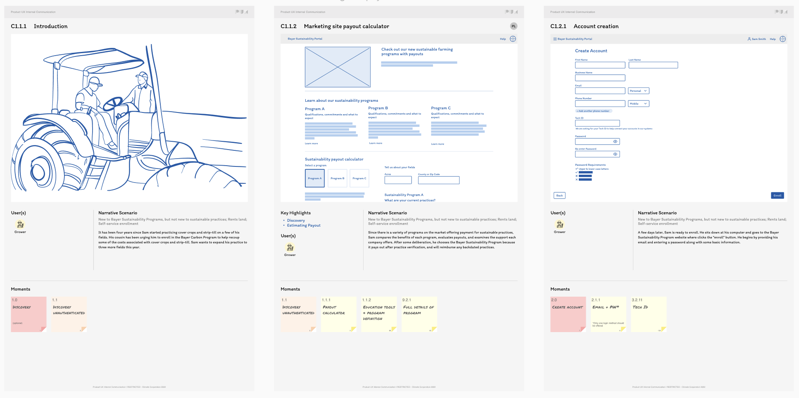
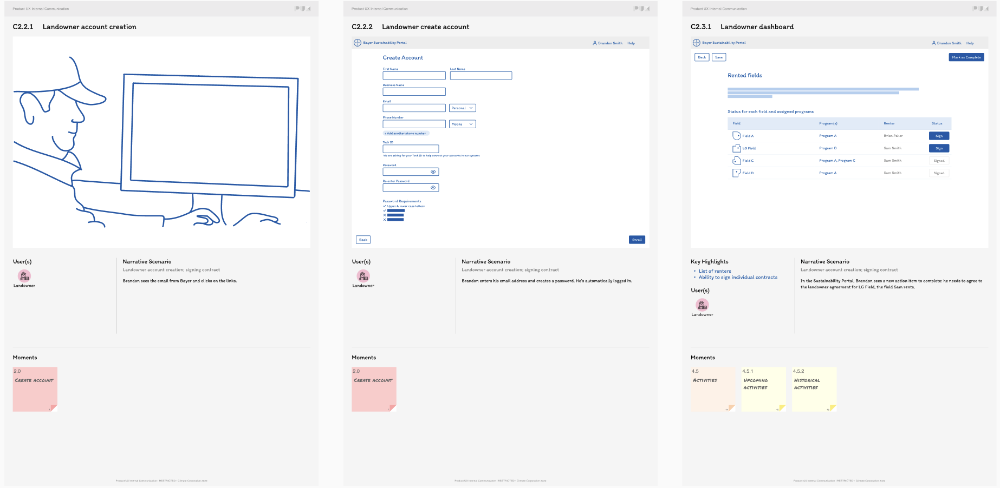
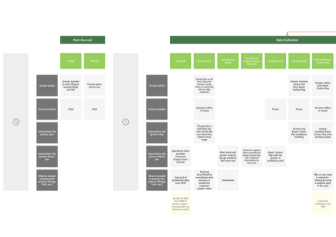
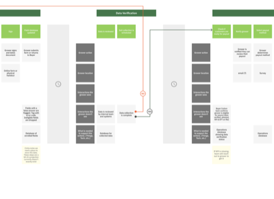
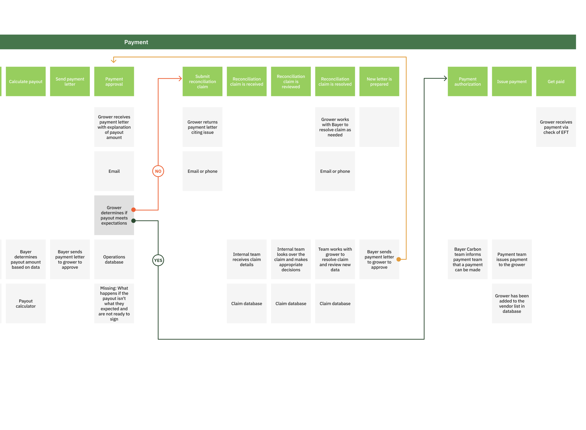

Research planning, stakeholder interviews, workshop facilitation, synthesis, blueprint creation, and leadership readouts.
Service design / Blueprinting / Enterprise operations
Carbon Program Service Blueprint
A multi-year service blueprint that made a complex grower journey visible across customers, advisors, field teams, operations, finance, and digital systems.

Partnered across three design sprints with business, operations, product, support, finance, and field stakeholders.
Documented visible touchpoints, hidden work, systems, ownership gaps, seasonal waits, and decision moments.
The program had many owners, but no shared view
The Carbon Program required growers, dealers, agronomists, operations teams, finance, legal, and multiple digital systems to coordinate across a journey that lasted more than a year.
Each team understood its own responsibilities, but no one had a complete picture of the customer experience or the backstage work required to move a grower from discovery to payment.
Customer impact
Long quiet periods, multiple entry paths, and inconsistent expectations made progress hard to understand.
Operational impact
Manual handoffs, duplicated activities, and unclear ownership made work harder to coordinate.
System impact
CRM, DMP, marketing automation, field tools, payment systems, and support channels were not operating from one shared source of truth.
Discovery connected individual perspectives into one operating model
We interviewed growers, dealers, field representatives, operations, finance, product, customer support, and leadership. The goal was not only to document steps. It was to show how each team’s work affected the customer journey and the teams downstream.
Research
Stakeholder interviews
Journey mapping
Affinity mapping
Blueprint creation
Validation workshops
Leadership reviews
Service evidence
Entry paths shaped expectations before the workflow converged
Self-guided discovery and advisor-led discovery introduced different expectations, but both paths eventually depended on the same operational workflow.

Frontstage to backstage
Enrollment quickly became more than a digital sign-up
What looked like a simple account and contract flow triggered DMP updates, email verification, onboarding lists, FieldView setup, signed contract storage, and imported field data.

Detailed artifact pages
Screen-level scenarios made the blueprint actionable
Alongside the service blueprint, we documented the concrete moments customers and internal teams would recognize: discovery, payout estimation, account creation, landowner enrollment, and rented-field contract status.


Seasonal service timing
Waiting states were often agricultural dependencies, not process failures
Post-harvest, data collection, customer support preparation, and field visits created natural pauses that needed clearer expectation-setting rather than more interface activity.

Operational dependency
Verification made ownership gaps visible
Data review, soil collection, payout readiness, W9 status, and operations databases created multiple points where teams needed explicit ownership and clearer handoff criteria.

Decision complexity
Payment exposed the cost of unclear reconciliation paths
Payment approval, grower review, reconciliation claims, internal decisions, revised letters, authorization, and vendor-list readiness formed a decision-heavy path that was difficult to see without the full blueprint.

The findings became a shared language for improvement
The final blueprint helped teams distinguish process issues from system issues and customer-experience issues. That distinction made the improvement conversation more actionable.
Process
Duplicated activities, manual handoffs, undefined ownership, and inconsistent decision criteria.
Technology
Disconnected systems, limited data sharing, and low visibility into customer status.
Experience
Long periods without communication, multiple entry points, and unclear expectations for what happened next.
The blueprint gave the organization a foundation for service improvement
- Created the organization’s first end-to-end Carbon Program service blueprint.
- Aligned multiple business units around one shared customer journey.
- Revealed duplicated operational work and hidden dependencies.
- Identified opportunities for automation and clearer handoff ownership.
- Established a practical foundation for future process improvements.